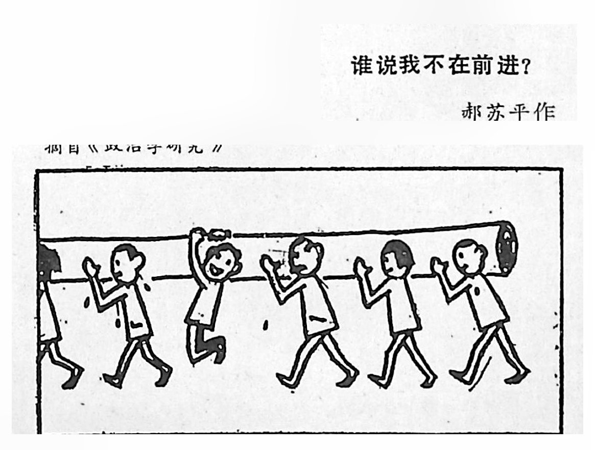

郝苏平 《人事》1986年第3期（总第6期），第39页
谁说我不在前进？
Who Says I'm Not Moving Forward?
- Description
- A line of people carries a log forward; one of them hangs from it with his feet off the ground.
- Artist
- Hao Suping 郝苏平
- Published in
- 《人事》1986年第3期（总第6期）, p. 39
- Themes
- Bureaucratism · Passing the buck

Cite
Hao Suping, “谁说我不在前进？” [Who Says I'm Not Moving Forward?], Renshi (Personnel) 《人事》, 1986, no. 3, p. 39.